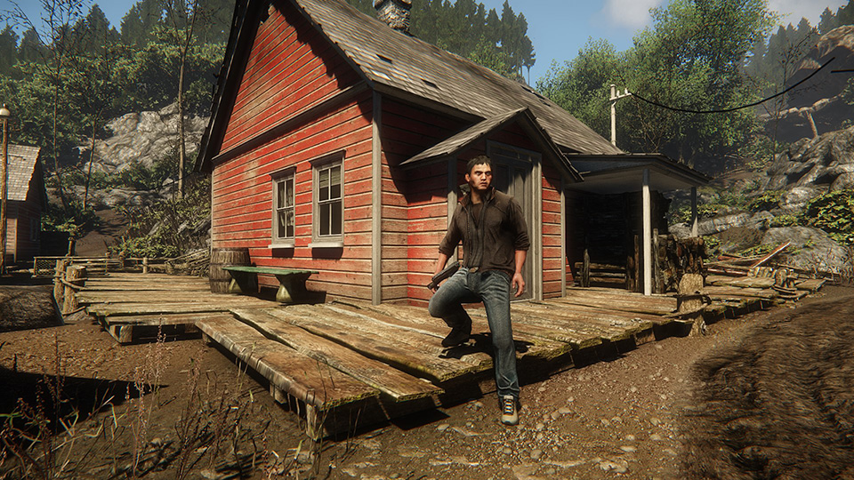
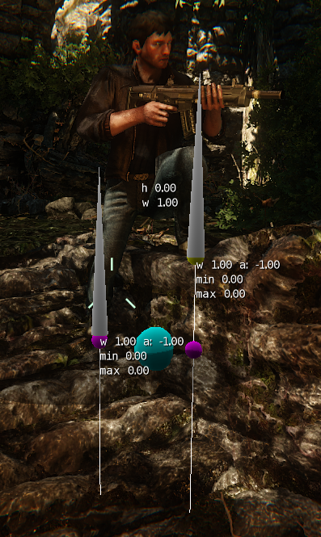

Overview
CRYENGINE can automatically adjust the character's legs and feet to match the surface of the terrain or ground he is standing on.
This includes the foot aligning to the direct of the slope in addition to the leg adjusting to different heights.
As with previous versions of the engine, animated character classes must be used if you wish to have the adaption, using the animobj entity or something similar will not function.
Sections

Required Scripts
Chrparams Joint Definitions
<LimbIK_Definition>
<IK EndEffector="Right_Foot" Handle="RgtLeg01" Root="Right_Thigh" Solver="2BIK"/>
<IK EndEffector="Left_Foot" Handle="LftLeg01" Root="Left_Thigh" Solver="2BIK"/>
</LimbIK_Definition>
You can have any name set for the calf, foot and thigh of your character as long as it's defined in the .chrparams, but make sure that the handle name is "RgtLeg01" for the right leg and "LftLeg01" for the left leg.
Naming Conventions
| Bone Name |
|---|
Bip01 Pelvis |
Bip01 planeTargetLeft |
Bip01 planeWeightLeft |
Bip01 planeTargetRight |
Bip01 planeWeightRight |
Debugging
Console variables to see that the pose aligner is active is:
| Console Variable | Description |
|---|---|
| a_poseAlignerEnable = 1 | Enables the Pose Aligner |
| a_poseAlignerDebugDraw = 1 | Enables Debug drawing of plane weight, target and root offsets |
| a_poseAlignerForceWeightOne = 1 | Forces weight to 1 which causes the limb to always adjust |
